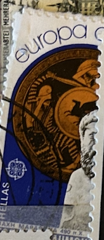
| SOURCE | TITLE| IMAGE MATCH | click to source page |
| eBay | Greece 1982 Scott #1422-1423 MNH Historic Events | eBay | 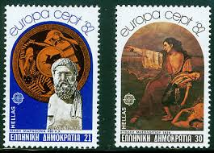 |
| eBay | EU - EUROPA C.E.P.T. - 1982 GREECE 20 sets MNH | eBay | 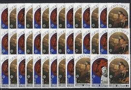 |
| eBay | S2376) Greece 1982 MNH** New** Europe, History 2v | eBay | 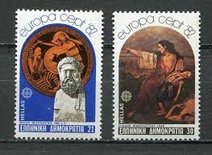 |
| eBay | Greece #1422-3 MNH Europa | eBay | 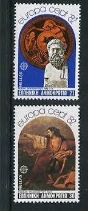 |
| Colnect | Greece : Stamps [Year: 1982] [1/4] : Colnect 📮 | 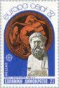 |
| eBay | Y754 Greece 1982 Battle of Marathon, Revolution 2v. MNH | eBay | 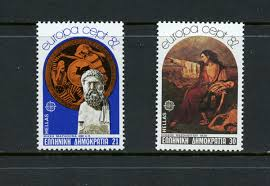 |
| eBay | GREECE Scott 1422-3 Mint Never Hinged | eBay | 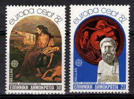 |
| eBay | Greece. Greek 30 Stamps, 8+2F Complete Sets, Year : 1982, International Amnesty | eBay | 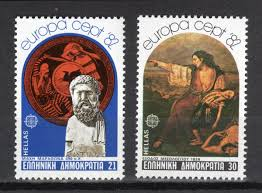 |
| eBay | 1870 BRAZIL 1983 MASTER IN ENGINEERING, MINERVA,GODDESS OF WISDOM, MI# 1979, MNH | eBay | 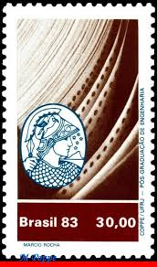 |
| Richard Philatelist (@richardphilatelist) • Facebook | ||
| eBay | Greece Stamp Issue 1992 (1793-1799) Mint never Hinged | eBay | 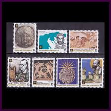 |
| Europa Study Unit | EUROPA NEWS | 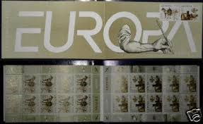 |
| eBay | Greece Mint Stamps Sc#1422-1423 MNH | eBay | 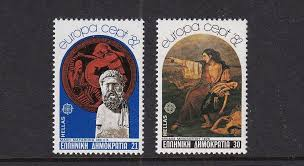 |
| eBay | 915848) Ship, Columbus, France | eBay | 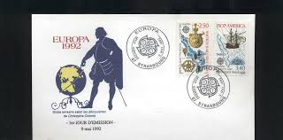 |
| Dreamstime.com | Athena Goddess Stamp Stock Photos - Free & Royalty-Free Stock Photos from Dreamstime | 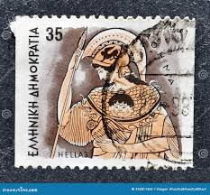 |
| eBay | FDC 1982 - Europa Römische Verdun (3853) | eBay | 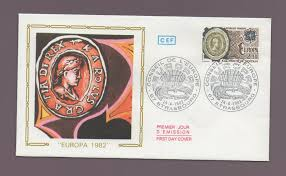 |
| Mystic Stamp Company | 8A514 - 1987 22c Greece UN Flags First Day Cover - Mystic Stamp Company | 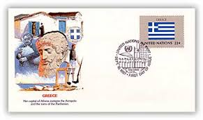 |
| zeboose.com | Great Britain 1993 £10 Britannia first day cover, PORTH – ZEBOOSE.COM | 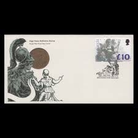 |
| Littleton Coin | Complete 13 Colonies to One Nation Silver-Plated 100 gram Copper Bar Set | Littleton Coin Company | 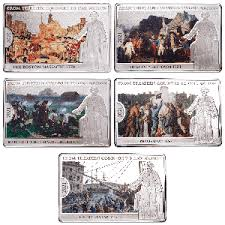 |
| eBay | GREECE 1422-23 MNH EUROPA 82, BATTLE OF MARATHON, 1826 REVOLUTION | eBay | 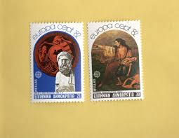 |
| eBay | Homer's Epic Poems 1983 Wooden Horse Achilles Hector Ajax Ulysses Priam 3 FDC 's | eBay | 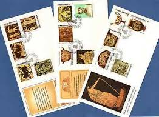 |
| eBay | Greece. 14 FDC's 10 Complete Sets Year: 1973, National Costumes Greek Mythology. | eBay | 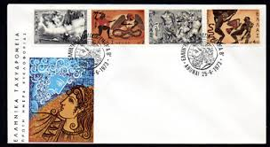 |
| eBay | Greece 1997 Europa Cept imperforate Booklet MNH | eBay | 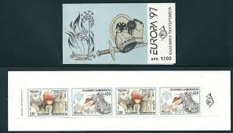 |
| eBay | Greece Scott 1422-1423 Unaddressed. | eBay | 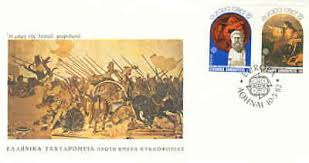 |
| eBay | Europa Stamps - Greece - Scott #'s 1874a/2110 - Cancelled | eBay | 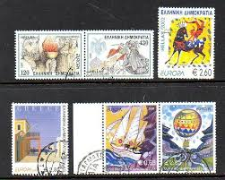 |
| Dreamstime.com | Cancelled Postage Stamp Printed by Greece, that Shows Greek Mythology - Gods of Olympus - Athena Editorial Stock Image - Image of ancient, hephaestus: 234811424 | 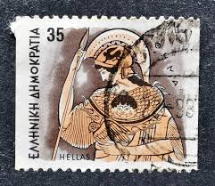 |
| eBay | Europa CEPT First Day Covers for sale | eBay | 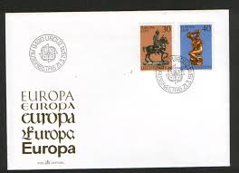 |
| eBay | Greek Stamp Booklets 1991-2000 Year of Issue for sale | eBay | 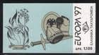 |
| eBay | Greece Anniversaries & Events of 1980 MNH Fire engine Saint Demetrius , Part : I | eBay | 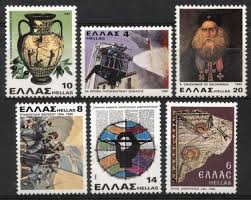 |
| Collector's Shop International | Greece 1999 "Konstantinos Karamanlis" Complete set MNH (**) Vlastos 2042-2045 | 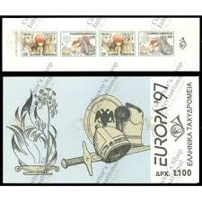 |
| eBay | Macau 1998 Vasco Da Gama Sea Route 1498 stamp S/S | eBay | 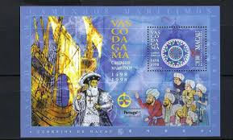 |
| GBFDC | GB First Day Cover Auction | 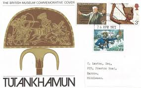 |
| eBay | First Day of Issue United Nations First Day Covers for sale | eBay | 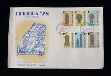 |
| Alice Craveiro (craveiroalice1) – Profile | Pinterest | 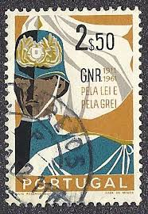 | |
| eBay | Greece 1993 Europa Imperforated Unofficial FDC. VF | eBay | 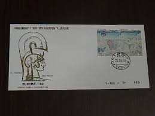 |
| eBay | SCOTT #1423-24 1979 PORTUGAL EUROPA '79 STAMPS FDC FLEETWOOD CACHET NICE! | eBay | 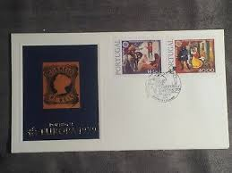 |
| Europa Study Unit | SEPTEMBER-OCTOBER 2019 Issue # 453 | 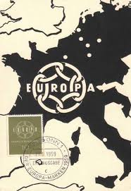 |
| eBay | Schweiz FDC Europa Cept Bern 1986. Los 9056 | eBay | 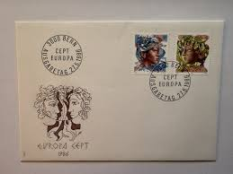 |
| eBay | O) 1983 MEXICO, ARTE, PAINTING, BASASEACHIC CASCADE CHIHUAHUA, SILENCE ZONE DURA | eBay | 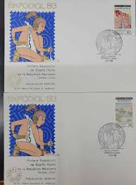 |
| The New Yorker | Comma Queen | Page 2 | The New Yorker | 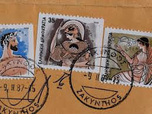 |
| eBay | URUGUAY, event cover 1978, EUROPHILA 78 Italy | eBay | 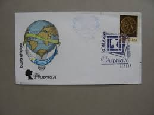 |
| eBay | Greece 1993 Europa Imperforated Unofficial FDC. VF | eBay | 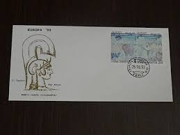 |
| zeboose.com | Great Britain 1993 £10 Britannia batch end FDC, EDINBURGH – ZEBOOSE.COM | 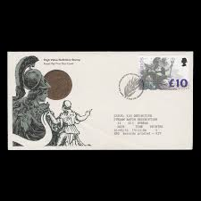 |
| AliExpress | 1998 , Vasco da Gama. - The voyage route . Miniature sheet . Macao Post Stamps . Philately , Postage , Collection - AliExpress 15 | 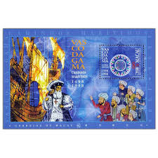 |
| Mesa Stamps | Vasco da Gama dated 1598 | 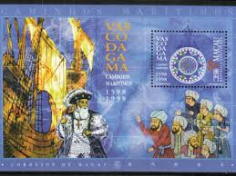 |
| eBay | MONACO MiNr. 1230-1231 Europa Cept FDC (BOGA 093) | eBay | 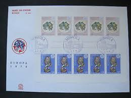 |
| eBay | Liechtenstein EUROPA 1974 SCULPTURE ART SET OFFICIAL CACHET FDC UNADDR | eBay | 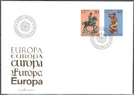 |
| 1942+Kaikias+–+god+of+Northeast+wind.Α΄ΕΚΔΟΣΗ | Francobolli, | 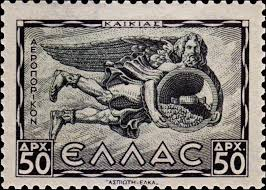 | |
| eBay | Greece 1984, 150 Years of Athens as capital of Greece set MNH, Mi 1568-69 2,5€ | eBay | 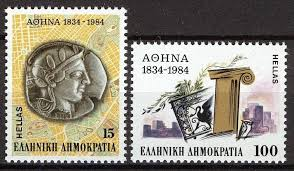 |
| eBay | GREECE 1985 COVER FOR THE EPIDAUROS FESTIVAL | eBay | 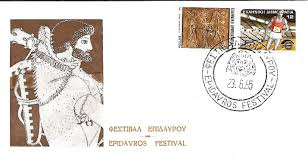 |
| Todocolección | liechtenst ivert 543/4, escultura: caballero vo - Buy Stamps about art on todocoleccion | |
| Etsy | Vintage Stamps, Greece Stamp Collection, Greece Postage Stamp Collection, Stamp Enthusiast Gift - Etsy | |
| eBay | CYPRUS 1993 COMPLETE YEAR SETS + REPRINT MOUFLON OFFICIAL+ UNOFFICIAL FDC's | eBay | |
| coinsworld.eu | Stamps: GREECE 1991 EUROPA CEPT MS FDC | |
| PicClick | MACAO VASCO DA Gama Monument Macau China 70s $9.99 - PicClick | |
| eBay | Military history Greek Revolution April 21st 1967 Athens Zappeion Goddess ATHENA | eBay | |
| eBay | J) 1974 LICHTENSTEIN, EUROPA CEPT, THE VOCIFERANT HORSEMAN, BY ANDREA RICCIO, KN | eBay | |
| Shutterstock | Moscow Russia October 24 2021 Postage Stock Photo 2066384723 | Shutterstock | |
| eBay | ST2376 2014 MOZAMBIQUE ART PAINTINGS ANCIENT GREECE SILVER KB+BL MNH | eBay | |
| eBay | UN - NY+GEN+VIE . 2004 Human Rights . 6 First Day Covers | eBay |